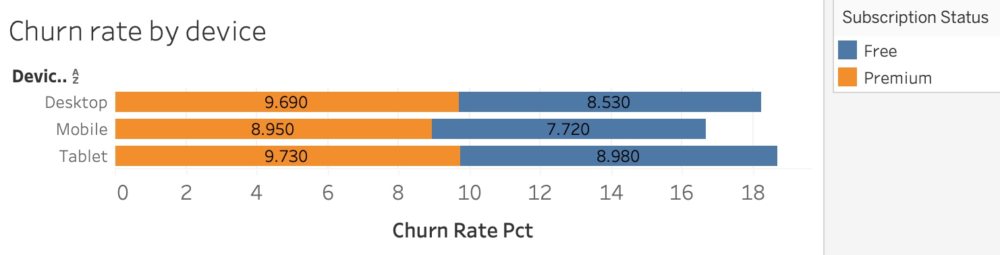
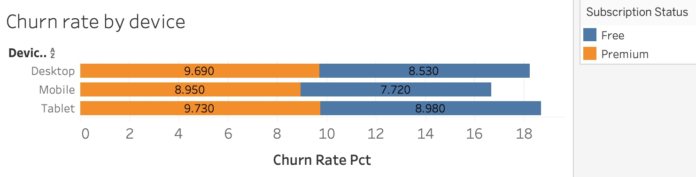
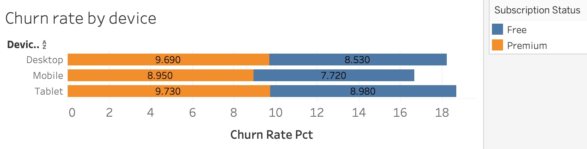

Executive summary
 

ORECA là một startup công nghệ chuyên phát triển các ứng dụng di động sáng tạo, mang đến trải nghiệm cá nhân hóa cho người dùng. Trong dự án này, tôi sử dụng kỹ năng SQL để phân tích một tập dữ liệu mô phỏng hành vi người dùng trên ứng dụng học đàn piano – một sản phẩm giả lập tương tự định hướng sản phẩm của ORECA. Mục tiêu là khai thác các insight về tần suất sử dụng, mức độ tương tác và hành trình người dùng, từ đó đưa ra đề xuất cải thiện trải nghiệm và giữ chân người dùng.
